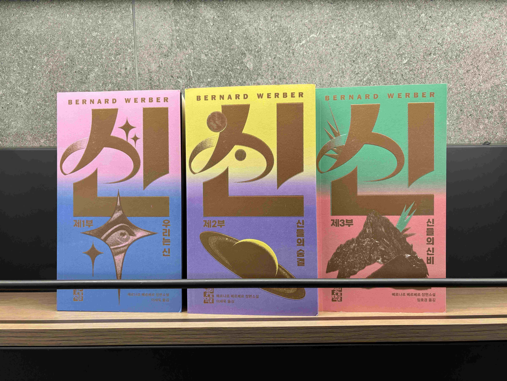
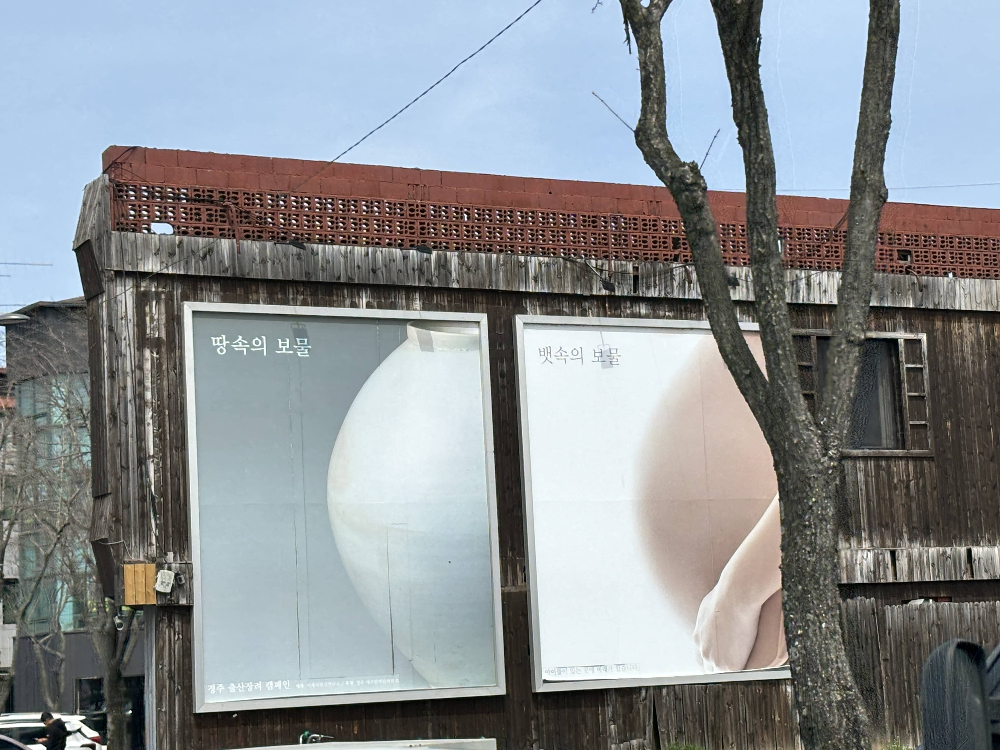
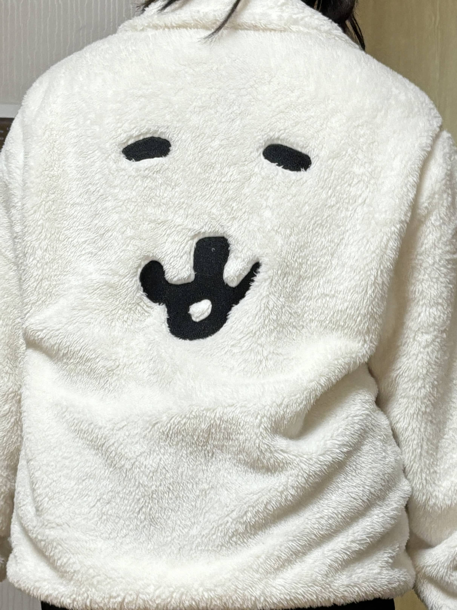

사범대학에서 본 안내문

다른 곳이 아닌 창문에 이곳은 휴지통이 아니라는 내용의 안내문이 붙어 있었다. 읽어보니 이곳을 지나가는 사람들이 창틀에 쓰레기를 자주 버려놔서 붙인 안내문 같았다. 창틀에도 쓰레기를 버리는 사람이 있다는 것에 놀랐다. 이 안내문을 읽었을 때 쓰레기를 쥐고 있었던 그 쓰레기는 꼭 쓰레기통에 버려야겠다는 생각을 했다. 쓰레기를 쓰레기통에 버리지 않았던 나를 반성하는 계기였다. 그리고 얇고 삐뚤빼뚤한 글씨체는 쓰레기를 버리지 말라는 내용을 더 강조한다. 각 단과대학에 쓰레기통을 설치하면 문제가 나아질 것이다. 청소하고 있는 오리 캐릭터가 쓰레기를 버리면 죄책감을 느끼게 했다.
카페에서 본 인형

카페를 갔는데 앉은 테이블 앞에 아기공룡 둘리 만화에 나오는 고길동 캐릭터 인형이 놓여 있었다. 30cm 정도의 큰 크기에 일그러진 표정이 인상 깊었다. 그 표정은 1교시 수업 때문에 일찍 일어나게 된 내 표정 같기도 했고 남들이 모르는 내 마음속 표정 같기도 했다. 혹시 주변에 둘리 인형이 있나 괜히 찾아보게 되었다. 인형 위에 있는 글도 고길동이라는 캐릭터가 직접 쓴 글 같아서 놀랐다. 그 시절 자신을 지켜본 사람들에게 말하는 말 같았다.
인센트 홀더

인센트들이 진열되어 있는 곳에서 갑자기 동물들 모형이 있었다. 하나하나 다 수작업을 했는지 모양이 제각각이어서 더 매력 있었다. 인센트를 꽂으면 동물들의 입에 꽂혀있는 것처럼 되어서 더 귀여웠다. 근데 인센트의 재가 떨어질 곳이 없는 것은 아쉬웠다. 평소에 인센트를 사용하진 않지만 아기자기해서 사고 싶었다. 그리고 동물들의 눈이 엄청 작아서 멍청해 보였다. 나중에 점토를 사서 직접 만들어봐야겠다.
서점에 있던 소설책의 표지

서점을 둘러보다가 책 표지에 '신'이라는 글자가 크게 적혀있었다. 사용된 색이 내가 좋아하는 색감이었다. 자세히 보니 유명한 프랑스의 소설가인 베르나르 베르베르의 책이어서 궁금증이 생겼다. 책의 제목을 표지의 절반이나 차지하게 디자인된 건 처음이었다. 제목을 보니 신에 대한 이야기인 것 같았다. 표지의 그림들을 보고 우주와 자연에 대한 이야기일 수도 있겠다는 생각도 했다. 인터넷에 찾아보니 철학적인 내용도 담고 있다고 해서 흥미가 조금 떨어지게 되었다. 책 표지에 쓰인 색 조합에 관심이 있어서 거기에 집중해서 관찰했다.
출산장려 캠페인

경주를 갔다가 본 출산장려 캠페인 포스터이다. 처음에 형태가 비슷한 물체 두 개가 벽에 크게 걸려있어서 호기심이 생겼다. 이 포스터 주변의 볼 것들이 많았는데도 읽게 되었다. 경주는 문화유적이 많다. 이 특성으로 캠페인에 유적을 이용하는 것은 우리나라 도시 중에 경주만 할 수 있을 것이다. 도자기와 임신한 배의 모양이 비슷하다는 사실도 새로 알게 되었다. 그리고 두 개를 보물로 비유했다는 것도 인상 깊었다. 캠페인에서 문구도 중요하지만 이미지가 아주 큰 역할을 한다는 것도 깨달았다. 지역의 특성을 이용한 캠페인은 또 무엇이 있을지 궁금했다.
소주잔

소주잔 바닥에 사진이 붙어있어서 깜짝 놀랐다. 모델을 이용하여 술 마케팅을 하는 건 포스터로 하는 것밖에 보지 못했다. 잔 바닥에 모델 사진을 붙이는 방식은 처음 봐서 참신하다고 생각했다. 이찬원 팬들은 술을 마시면서 기분이 정말 좋을 것이다. 나는 이찬원 팬이 아니라서 저 잔을 들고 술을 마실 때마다 조금 부담스러웠다. 하지만 이 방법으로 마케팅을 하려면 모델이 정말 유명해야겠다고도 생각했다. 또 다른 주류 마케팅 방법은 뭐가 있을지 궁금했다. 내가 좋아하는 연예인으로 직접 만들어도 되겠다. 내가 해볼 때는 소주잔 말고 다양한 잔에 해봐야겠다.
농담곰 플리스

동생이 플리스를 하나 샀다. 농담곰 캐릭터의 눈코입이 등에 크게 그려져 있는 플리스였다. 평소에 좋아하고 귀여워서 관심이 갔다. 옷의 뒷면 전체를 캐릭터의 얼굴로 이용하는 디자인은 처음봤다. 이건 큰 얼굴에 눈코입이 작은 농담곰의 특성도 잘 나타난다. 농담곰의 털은 짧은데 플리스의 털은 길고 복실해서 농담곰을 크게 확대해놓은 것처럼 보였다. 어깨에 농담곰의 귀도 있었으면 어땠을지 생각했다. 눈코입만으로 표현할 수 있는 다른 캐릭터는 뭐가 있을지 궁금했다. 농담곰은 색깔도 흰색이라 플리스에 이용할 수 있는 아주 좋은 캐릭터이다. 검은색 농담곰 플리스도 있었다. 이건 잘 더러워지진 않겠지만 검은색이라 조금 아쉬운 것 같다.